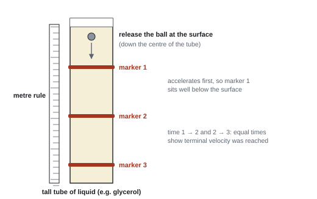

Density, Upthrust & Viscous Drag
Why does a steel ship float when a steel bolt sinks? Why does a marble fall slowly through honey, and faster when the honey is warm? This topic is about how objects behave in fluids (liquids and gases). Three ideas do all the work: density, upthrust and viscous drag. Put them together and you can predict a ball's terminal velocity, which is exactly how Core Practical 2 measures the viscosity of a liquid.
Spec23Density
Use ρ = m/V.
Density
ρ = density (kg m⁻³), m = mass (kg), V = volume (m³).
- Density is mass per unit volume. It's a property of the material, not of the size of the object.
- Water ≈ 1000 kg m⁻³ (1.00 g cm⁻³); steel ≈ 7800 kg m⁻³; air ≈ 1.2 kg m⁻³.
- Volume formulas you must know (they are not given): sphere V = ⁴⁄₃πr³; cylinder V = πr²h; cuboid V = l × w × h. Cross-sectional area of a wire A = πr² = πd²/4.
- Unit conversions: 1 cm³ = 10⁻⁶ m³; 1 mm³ = 10⁻⁹ m³; 1 g cm⁻³ = 1000 kg m⁻³. The power applies to the whole conversion factor: (10⁻² m)³ = 10⁻⁶ m³.
- Measuring density: regular solid → mass on a balance, dimensions with vernier calipers or a micrometer; irregular solid → volume by displacement in a measuring cylinder; liquid → mass of a measured volume (balance and measuring cylinder).
a steel ball
A steel ball bearing (ρ = 7800 kg m⁻³) has a diameter of 6.0 mm. Find its mass and weight.
r = 3.0 mm = 3.0 × 10⁻³ m. V = ⁴⁄₃ × π × (3.0 × 10⁻³)³ = 1.13 × 10⁻⁷ m³.
m = ρV = 7800 × 1.13 × 10⁻⁷ = 8.8 × 10⁻⁴ kg. W = mg = 8.7 × 10⁻³ N.
- "Calculates volume of sphere / cylinder"; "use of ρ = m/V"; "use of W = mg" (separate marks).
- Examiners say the sphere and cylinder volume formulas are ones "candidates are expected to know" (WPH11 Jun 2022 Q19).
Often asked as: mass or weight of a sphere, cylinder or drop; density from given data; MCQ scaling (a cube with sides × 1.5 has 1.5³ times the volume, but the same density if it's the same material).
- Using the diameter as the radius; forgetting to cube (or square) it; using the surface-area formula for the volume.
- Stopping at the mass when the weight was needed.
- Not noticing an object is hollow (WPH11 Jan 2022 Q15).
- cm³ → m³ by dividing by 100 instead of 10⁶.
A crown has a mass of 1.20 kg. When it is lowered into a full displacement can, 75 cm³ of water overflows. The density of gold is 19 300 kg m⁻³. Is the crown pure gold?
Show solution
The crown displaces its own volume: \(V = 75\ \text{cm}^3 = 75\times10^{-6}\ \text{m}^3\).
\[ \rho = \frac{m}{V} = \frac{1.20}{75\times10^{-6}} = 1.6\times10^{4}\ \text{kg m}^{-3} \]That is well below 19 300 kg m⁻³, so the crown is not pure gold; it has been mixed with a less dense metal. A pure gold crown of the same mass would displace only \(1.20 / 19\,300 = 6.2\times10^{-5}\ \text{m}^3 = 62\ \text{cm}^3\). (This is the problem Archimedes is said to have solved in his bath.)
Spec24Upthrust
Use the relationship upthrust = weight of fluid displaced.
Archimedes' principle
An object in a fluid (liquid or gas) feels an upward force, upthrust, equal to the weight of the fluid it displaces.
Archimedes' principle
- Why it exists: pressure in a fluid increases with depth, so the fluid pushes up on the bottom of the object harder than it pushes down on the top. The difference is the upthrust.
- For a fully submerged object, Vdisplaced = the object's volume. For a floating object, it's only the submerged part.
- Upthrust does not depend on how deep the object is (once fully submerged), or on what it is made of.
Floating and sinking
- Floating (at rest): upthrust = weight (not greater). A floating object displaces its own weight of fluid.
- Sinking: weight > maximum upthrust (when fully submerged). An object denser than the fluid sinks; this is why density matters, but explain it with forces.
- Resultant force on a submerged object = W − U (downwards if positive).
- In a less dense fluid (e.g. fresh water rather than seawater, or warmer liquid), a floating object must displace a larger volume to get the same upthrust, so it sits lower.
upthrust on a ball
The 6.0 mm steel ball from 23 (V = 1.13 × 10⁻⁷ m³) is fully submerged in oil of density 920 kg m⁻³.
U = 920 × 1.13 × 10⁻⁷ × 9.81 = 1.0 × 10⁻³ N. Its weight is 8.7 × 10⁻³ N, so it sinks.
an iceberg
Ice has density 917 kg m⁻³ and seawater 1025 kg m⁻³. What fraction of an iceberg is above the water?
Floating: U = W, so ρsea Vsub g = ρice V g → Vsub ÷ V = 917 ÷ 1025 = 0.895.
Fraction above the surface = 1 − 0.895 = 0.11 (about 10 %).
A floating object is in equilibrium, so the resultant force on it is zero:
\[ U = W \]The upthrust is the weight of the fluid displaced by the submerged volume \(V_\text{sub}\). The weight uses the whole volume \(V\):
\[ \rho_\text{f} V_\text{sub}\, g = \rho_\text{obj} V g \]Cancel \(g\) and divide both sides by \(\rho_\text{f} V\):
\[ \boxed{\frac{V_\text{sub}}{V} = \frac{\rho_\text{obj}}{\rho_\text{f}}} \]\(g\) cancels, so a boat floats at the same level on the Moon.
- Definition: "an upwards force caused by the displacement of fluid / equal to the weight of fluid displaced" (WPH11 Oct 2023 Q17: only a small proportion scored).
- "Use of upthrust = weight of fluid displaced" (often with "use of ρ = m/V"); "weight of displaced water", not "water replaced".
- Name which weight: "the weight of the hydrometer", "the weight of seawater displaced" (WPH11 Oct 2024 Q16).
Often asked as: upthrust on balloons, bubbles, submarines and lifting bags; icebergs; 6-mark explanations (Galilean thermometer: temperature rises → liquid density falls → upthrust falls → bulb sinks; an egg in water); hydrometers; a ball held in water on a balance.
- Saying a floating object has U > W. Floating at rest: U = W.
- Explaining only with densities ("it's less dense so it floats"): no marks unless you give the force argument.
- Bringing viscosity into a static floating question.
- Believing the water pushes down harder at depth, so the upthrust changes with depth.
- Hydrometers and Galilean thermometers: the same object floats at different levels in liquids of different density (WPH11 Jun 2022 Q15, Oct 2024 Q16).
- A Cartesian diver: squeezing the bottle compresses the air bubble, the displaced volume falls, upthrust falls, so the resultant force is downwards and it sinks (WPH11 Jan 2024 Q13).
- Newton's third law: the fluid pushes up on the object, so the object pushes down on the fluid; a balance under the beaker reads more (WPH11 Jan 2020 Q19).
A stone hangs from a newton meter. The reading is 5.0 N in air and 3.2 N when the stone is completely submerged in water (density 1000 kg m⁻³). Calculate (a) the upthrust, (b) the volume of the stone and (c) its density.
Show solution
(a) The newton meter reads \(W - U\), so
\[ U = 5.0 - 3.2 = 1.8\ \text{N} \](b) The upthrust is the weight of water displaced, and the stone displaces its own volume:
\[ U = \rho_\text{w} V g \;\Rightarrow\; V = \frac{U}{\rho_\text{w} g} = \frac{1.8}{1000 \times 9.81} = 1.83\times10^{-4}\ \text{m}^3 \](c) Mass from the weight in air, then density:
\[ m = \frac{W}{g} = \frac{5.0}{9.81} = 0.510\ \text{kg}, \qquad \rho = \frac{m}{V} = \frac{0.510}{1.83\times10^{-4}} = 2.8\times10^{3}\ \text{kg m}^{-3} \]Shortcut worth noticing: \(W/U = \rho_\text{stone} V g / \rho_\text{w} V g = \rho_\text{stone}/\rho_\text{w}\), so \(\rho_\text{stone} = 1000 \times 5.0/1.8 = 2800\ \text{kg m}^{-3}\) in one line.
A rectangular block of wood measures 0.50 m × 0.20 m × 0.10 m. It floats in water (density 1000 kg m⁻³) with its largest face horizontal and 6.5 cm of its 10 cm thickness under the surface. (a) Calculate the density of the wood. (b) Calculate the smallest mass that could be placed on top of the block to push it completely under.
Show solution
(a) The cross-section is the same all the way down, so the fraction of the volume submerged is the fraction of the thickness submerged:
\[ \frac{\rho_\text{wood}}{\rho_\text{w}} = \frac{6.5}{10} \;\Rightarrow\; \rho_\text{wood} = 0.65 \times 1000 = 650\ \text{kg m}^{-3} \](b) Volume \(V = 0.50 \times 0.20 \times 0.10 = 0.010\ \text{m}^3\). Fully submerged, the upthrust and the block's weight are
\[ U = 1000 \times 0.010 \times 9.81 = 98.1\ \text{N}, \qquad W = 650 \times 0.010 \times 9.81 = 63.8\ \text{N} \]The extra weight needed is \(98.1 - 63.8 = 34.3\ \text{N}\), so the mass is
\[ m = \frac{34.3}{9.81} = 3.5\ \text{kg} \]Spec25Viscous drag and Stokes' law
(a) Use Stokes' law, F = 6πηrv. (b) Know that it only applies to small spheres moving slowly with laminar flow, and that viscosity depends on temperature.
Viscosity and flow
- Viscosity η is a measure of a fluid's resistance to flow (how "thick" it is). Unit: Pa s (= N s m⁻² = kg m⁻¹ s⁻¹). Water ≈ 1 × 10⁻³ Pa s; glycerol ≈ 1.4 Pa s at 20 °C.
- Laminar (streamline) flow: the fluid moves in smooth layers that don't mix; the velocity at any point is steady. Streamlines are smooth and don't cross.
- Turbulent flow: the layers break up into eddies and swirls; the velocity at a point keeps changing. It happens at high speeds and around large or unstreamlined objects.
- Viscous drag is the resistive force on an object moving through a fluid.
Stokes' law
Stokes' law: viscous drag on a sphere
F = viscous drag (N), η = viscosity of the fluid (Pa s), r = radius of the sphere (m), v = speed of the sphere relative to the fluid (m s⁻¹).
It applies only when:
- the object is a small sphere;
- it moves at low speed;
- the flow is laminar (no turbulence).
Temperature
The viscosity of a liquid decreases as the temperature rises (syrup and oil run faster when warm). So a ball falls faster in warm oil. (Gases do the opposite, but that's not examined.) Always control or measure the temperature in a viscosity experiment.
Terminal velocity of a sphere in a liquid
The forces are weight W (down), upthrust U and drag F (both up). See the free-body diagram in 8 and the v–t graph in 9. At terminal velocity there is no resultant force:
Sphere at terminal velocity in a liquid
Scaling: W and U ∝ r³ but drag ∝ r, so a bigger sphere of the same material has a higher terminal velocity (v ∝ r²).
Typical set-up (as in most papers)
- V = ⁴⁄₃πr³; W = ρsphereVg.
- U = ρfluidVg.
- At terminal velocity, F = W − U.
- F = 6πηrv: solve for η or v, or compare the drag Stokes' law predicts with W − U to decide whether the law applies.
terminal velocity in glycerol
A steel ball of radius 1.0 mm (ρ = 7800 kg m⁻³) falls through glycerol (ρ = 1260 kg m⁻³, η = 1.4 Pa s). Find its terminal velocity.
V = ⁴⁄₃π(1.0 × 10⁻³)³ = 4.19 × 10⁻⁹ m³.
W = 7800 × 4.19 × 10⁻⁹ × 9.81 = 3.21 × 10⁻⁴ N. U = 1260 × 4.19 × 10⁻⁹ × 9.81 = 5.18 × 10⁻⁵ N.
F = W − U = 2.69 × 10⁻⁴ N.
v = F ÷ 6πηr = 2.69 × 10⁻⁴ ÷ (6π × 1.4 × 1.0 × 10⁻³) = 1.0 × 10⁻² m s⁻¹ (1.0 cm s⁻¹).
Low speed, small sphere: Stokes' law is reasonable here.
does Stokes' law apply?
A larger ball's measured speed is 1.7 m s⁻¹, but Stokes' law with W − U predicts 0.050 m s⁻¹. The two don't agree, so Stokes' law does not apply: at this speed the flow is turbulent (WPH11 Jun 2024 Q14).
At terminal velocity the resultant force is zero, so the upward forces balance the weight:
\[ W = U + F \]Write the weight using the density of the sphere. Its volume is \(\tfrac{4}{3}\pi r^3\), so its mass is \(\tfrac{4}{3}\pi r^3 \rho_\text{s}\):
\[ W = \tfrac{4}{3}\pi r^3 \rho_\text{s}\, g \]The upthrust is the weight of the liquid displaced, which has the same volume but the liquid's density:
\[ U = \tfrac{4}{3}\pi r^3 \rho_\text{f}\, g \]The drag at terminal velocity \(v_\text{t}\) comes from Stokes' law:
\[ F = 6\pi \eta r v_\text{t} \]Substitute all three into \(W = U + F\) and collect the two "volume" terms:
\[ 6\pi \eta r v_\text{t} = \tfrac{4}{3}\pi r^3 g\,(\rho_\text{s} - \rho_\text{f}) \]\(\rho_\text{s} - \rho_\text{f}\) appears because the upthrust "cancels out" part of the weight.
Divide both sides by \(6\pi\eta r\). The \(\pi\) cancels and one power of \(r\) cancels, and \(\tfrac{4}{3} \div 6 = \tfrac{4}{18} = \tfrac{2}{9}\):
\[ \boxed{v_\text{t} = \frac{2 r^2 g\,(\rho_\text{s} - \rho_\text{f})}{9\eta}} \]Rearranged for the viscosity, which is what Core Practical 2 uses:
\[ \eta = \frac{2 r^2 g\,(\rho_\text{s} - \rho_\text{f})}{9 v_\text{t}} \]- Conditions: "small, spherical object" or "spherical object at low speed"; "laminar flow (allow absence of turbulent flow)" (WPH11 Jan 2026 Q15, Oct 2024 Q19).
- Laminar flow: "no abrupt change in direction or speed of flow; layers don't mix; velocity at a point is constant".
- Temperature: "viscosity decreases as temperature increases" (or the converse).
- "Comparison of F with W − U and conclusion consistent with the values" (WPH11 Jun 2022 Q19).
- Say "viscous drag": "drag" alone was not enough (WPH11 Oct 2020 Q15).
Often asked as: state a condition for Stokes' law; calculate F, η or v; "deduce whether Stokes' law applies" (5 marks); effect of temperature on viscosity and terminal velocity; effect of changing r or η; bubbles and balloons rising.
- Giving "terminal velocity", "constant temperature" or "known densities" as conditions for Stokes' law.
- Giving "spherical" as a condition when the question already says the object is a sphere.
- "The object must be laminar." It's the flow that is laminar.
- Treating v in 6πηrv as a volume, or using the diameter as r.
- Forgetting upthrust when finding the drag at terminal velocity.
- Rounding the speed to 1 s.f. before using it.
- Saying a higher viscosity increases the terminal velocity, or confusing viscosity with density.
- Unit of viscosity: Pa s, or kg m⁻¹ s⁻¹ in base units (WPH11 Jan 2023 Q12).
- Rearranged terminal-velocity formula: v = 2r²g(ρs − ρf) ÷ 9η. It is not in the spec, and a misremembered version scores nothing, so it's safer to work from W = U + F each time (WPH11 Oct 2019 Q15).
- Scaling: W ∝ r³ and drag ∝ r, so a smaller sphere is needed to keep the speed low in a less viscous fluid such as blood (WPH11 Jun 2022 Q19).
A steel ball bearing of radius 1.0 mm falls at a terminal velocity of 1.2 cm s⁻¹ through an oil of density 960 kg m⁻³. The density of steel is 7800 kg m⁻³. (a) Calculate the weight of the ball and the upthrust on it. (b) Calculate the viscosity of the oil. (c) State one assumption you have made.
Show solution
(a) Volume \(V = \tfrac{4}{3}\pi (1.0\times10^{-3})^3 = 4.19\times10^{-9}\ \text{m}^3\).
\[ W = \rho_\text{s} V g = 7800 \times 4.19\times10^{-9} \times 9.81 = 3.21\times10^{-4}\ \text{N} \] \[ U = \rho_\text{f} V g = 960 \times 4.19\times10^{-9} \times 9.81 = 3.95\times10^{-5}\ \text{N} \](b) At terminal velocity \(F = W - U = 3.21\times10^{-4} - 0.39\times10^{-4} = 2.81\times10^{-4}\ \text{N}\). From Stokes' law:
\[ \eta = \frac{F}{6\pi r v} = \frac{2.81\times10^{-4}}{6\pi \times 1.0\times10^{-3} \times 0.012} = 1.2\ \text{Pa s} \](The formula \(\eta = 2r^2 g(\rho_\text{s}-\rho_\text{f})/9v_\text{t}\) gives the same answer in one step.)
(c) Any one of: the flow round the ball is laminar (so Stokes' law applies); the ball is a perfect sphere; the ball had reached terminal velocity; the temperature of the oil was constant; the walls of the container don't affect the motion.
Spec26Core Practical 2: viscosity by the falling-ball method
Use a falling-ball method to determine the viscosity of a liquid.
Principle
Time a ball bearing falling at terminal velocity through the liquid. Then use W = U + 6πηrv to find η.

Core practical 2: method in brief
- Measure the mass of a ball bearing (or several identical ones) on a balance, and its diameter with a micrometer or vernier calipers (several readings at different orientations; take a mean; halve for r).
- Find the density of the liquid: mass of a measured volume (balance and measuring cylinder). Measure its temperature.
- Fix rubber bands round a tall tube of the liquid as markers: the top one well below the surface (the ball accelerates at first), the others below it at measured equal spacings (e.g. 10–15 cm).
- Release the ball at the surface, down the centre of the tube.
- Time it between the markers with a stopwatch (or light gates / video for better timing). Equal times between successive pairs show it's at terminal velocity.
- Repeat (at least 3 times) and use the mean time. v = distance ÷ mean time.
- Calculate η from W = U + 6πηrv. For a better result, repeat with balls of different radii and plot v against r² (gradient = 2g(ρs − ρf) ÷ 9η).
Safety: clamp the tall tube so it can't topple; wipe up spills (slippery); a magnet retrieves the balls.
Variables and errors
- IV: ball radius (if varied). DV: terminal velocity. Control: the liquid, its temperature, the ball material.
- Ball not at terminal velocity before the first marker → time too short, v too high, η too low. Fix: move the markers lower; check equal times.
- Parallax reading the ball passing a marker: eye level with the band; reaction time with a stopwatch → random error; use a longer distance or a video.
- Wall effects in a narrow tube slow the ball: use a wide tube and drop down the centre.
- A larger, faster ball gives a shorter time, so a bigger percentage uncertainty in the timing (WPH11 Oct 2019 Q15).
processing results
Ball radius r = 1.00 mm, ρs = 7800 kg m⁻³; glycerol ρf = 1260 kg m⁻³. Mean time to fall 0.150 m between markers = 15.0 s.
v = 0.150 ÷ 15.0 = 0.0100 m s⁻¹.
η = 2r²g(ρs − ρf) ÷ 9v = 2 × (1.00 × 10⁻³)² × 9.81 × (7800 − 1260) ÷ (9 × 0.0100) = 1.4 Pa s.
(This rearranged formula comes from W = U + 6πηrv with W and U written as ⁴⁄₃πr³ρg.)
- Method (5 marks, WPH11 Oct 2019 Q15): "two or more markers on the cylinder"; "top marker far enough below the surface for terminal velocity to be reached, or more than two markers and check the velocity is constant"; "measure the time to fall between markers (stopwatch) and the distance (metre rule)"; "repeat and average"; "v = distance ÷ mean time (or gradient of distance–time)".
- Why the first marker is low: "the sphere will be accelerating initially / needs a distance to reach terminal velocity" (WPH11 Oct 2020 Q15).
- Measurements: "mass of the ball bearing with a balance"; "diameter with (micrometer / vernier) calipers". Calipers measure the diameter, not the radius (WPH11 Jan 2023 Q12).
Often asked as: describe how to measure terminal velocity; why a third marker; which error makes η too high or too low; full viscosity calculations from given data; why a larger ball raises the percentage uncertainty.
- Dropping the ball from above the liquid surface.
- Describing light gates or a camera when the question says stopwatch and metre rule.
- Explaining how to calculate η when only the terminal velocity was asked.
- "For accuracy" with no explanation of what is improved and why.
In a falling-ball experiment a student plots terminal velocity \(v\) against \(r^2\) for steel balls (density 7800 kg m⁻³) falling through a liquid of density 1260 kg m⁻³. The best-fit line passes through the origin and has a gradient of \(7.6\times10^{3}\ \text{m}^{-1}\ \text{s}^{-1}\). (a) Calculate the viscosity of the liquid. (b) The student's value is higher than the value in a data book. Suggest one reason why.
Show solution
(a) The gradient is \(2g(\rho_\text{s}-\rho_\text{f})/9\eta\), so
\[ \eta = \frac{2g(\rho_\text{s}-\rho_\text{f})}{9 \times \text{gradient}} = \frac{2 \times 9.81 \times (7800 - 1260)}{9 \times 7.6\times10^{3}} = 1.9\ \text{Pa s} \]Check the units: \(\text{m s}^{-2} \times \text{kg m}^{-3} / (\text{m}^{-1}\,\text{s}^{-1}) = \text{kg m}^{-1}\,\text{s}^{-1} = \text{Pa s}\).
(b) The liquid was colder than the data-book temperature (viscosity rises as temperature falls); or the walls of a narrow cylinder slowed the balls, making \(v\) too small and \(\eta\) too big.
Quick checks
A block floats in water (density 1000 kg m⁻³) with three-quarters of its volume below the surface. What is the density of the block?
For a floating object \(V_\text{sub}/V = \rho_\text{obj}/\rho_\text{f}\), so \(\rho_\text{obj} = 0.75 \times 1000 = 750\ \text{kg m}^{-3}\). 1333 comes from dividing the wrong way round; a floating object can't be denser than the liquid.
A steel ball is fully submerged in water and then lowered deeper. What happens to the upthrust on it?
Upthrust is the weight of fluid displaced, and a fully submerged ball always displaces its own volume. The pressure is bigger on both its top and its bottom, but the difference between them stays the same. A sinking object still feels upthrust; it just isn't enough to balance its weight.
Which of these is a correct unit for viscosity?
\(\eta = F/6\pi r v\) has units N/(m × m s⁻¹) = N s m⁻² = Pa s. Writing N as kg m s⁻² gives kg m s⁻² × s × m⁻² = kg m⁻¹ s⁻¹.
Two steel balls fall through the same glycerol. Ball Q has twice the radius of ball P. Stokes' law applies to both. What is the ratio (terminal velocity of Q) / (terminal velocity of P)?
\(v_\text{t} \propto r^2\). Doubling \(r\) makes the weight minus upthrust 8 times bigger (it goes as \(r^3\)), but the drag at a given speed only doubles (it goes as \(r\)), so the speed must be 4 times bigger for the forces to balance. "Everything falls at the same rate" is only true with no drag and no upthrust.
The glycerol in a falling-ball experiment warms up from 18 °C to 25 °C during the lesson. What happens to the terminal velocity of a ball bearing?
The viscosity of a liquid falls as its temperature rises, and \(v_\text{t} \propto 1/\eta\). The density of glycerol does fall very slightly when it warms, but that effect is tiny compared with the large drop in viscosity.
A small sphere is falling through oil at its terminal velocity. Which statement is correct?
At terminal velocity the resultant force is exactly zero: \(W = U + F\), so \(F = W - U\). If the upthrust equalled the weight, the sphere would not be falling at all.